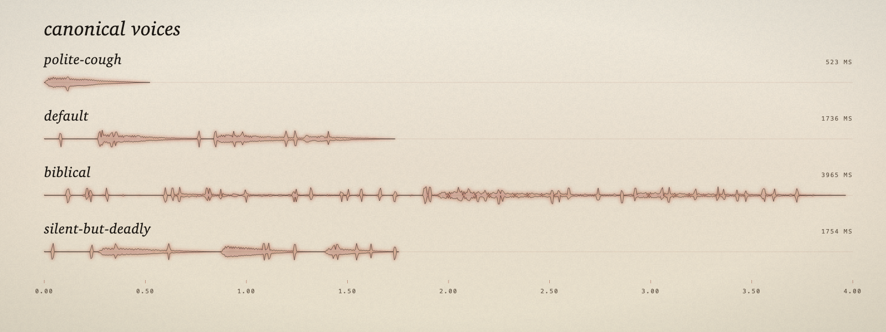
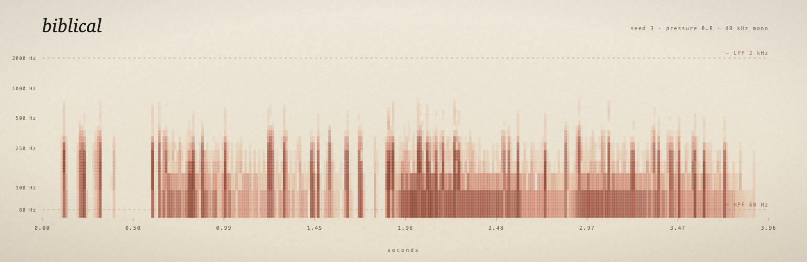

a small apparatus for moving air.
A small thing that lives in your menubar and occasionally farts. It is also, by acoustic accident, the same waveform Apple ships in watchOS to push water out of the Apple Watch speaker.
Detecting your machine…
One paste into Terminal fetches the DMG, drops flatus.app into /Applications, and clears the quarantine bit that otherwise produces macOS's unhelpful "app is damaged" line.
$ curl -fsSL https://flatus.vercel.app/install.sh | bash.dmg (or unzip the .app.zip).flatus.app into /Applications.xattr -cr /Applications/flatus.app. UI-only alternative: System Settings → Privacy & Security → Open Anyway after the first blocked attempt.flatus.app. A small icon appears in your menubar.
Once it is running, the menubar icon is home base. If that icon ever gets dragged away, reopen flatus.app from Applications or Spotlight and the full window will come back as your recovery path.
A live preview, rendered in your browser by the same Rust synthesis core. Not a recording, not a mockup, and not especially dignified.

Four canonical voices. Tap to hear the desktop-aligned specimen; use ↓ .wav if you want the separately pinned canonical file.
No menubar? No problem. The same instrument ships as a CLI anywhere Rust will go.
$ git clone https://github.com/p-to-q/flatus
$ cd flatus
$ cargo install --path crates/fart-synth
$ fart # one shot, default voice
$ fart --personality biblical # pick a voice
$ fart --seed 42 --render out.wav # write a WAV; identical to this page
$ fart --list-personalities
biblical.wav — seed 3, pressure 0.8, the canonical fixture.| Frequency band | 60 Hz – 2 kHz (HPF, LPF) |
|---|---|
| Sample rate | 48 000 Hz |
| Bit depth | 16-bit, signed, little-endian |
| Channels | 1 (mono) |
| Output cap | −6 dBFS (speakers) · −18 dBFS (headphones) |
| Session ceiling | 30 s |
| Cooldown | 60 s minimum between events |
| Determinism | (personality, seed, pressure) → bit-identical WAV |